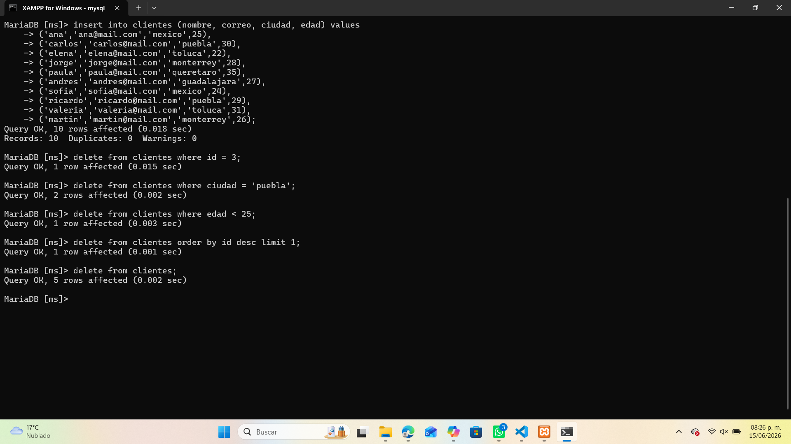
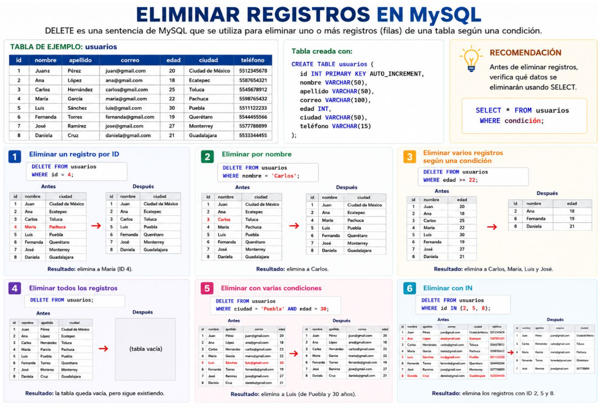

🗑️ Eliminar Registros en MySQL
El comando DELETE se utiliza para eliminar uno o más registros (filas) de una tabla según una condición. Es importante verificar los datos antes de eliminar para evitar pérdidas accidentales.
📋 Sintaxis básica
DELETE FROM nombre_tabla WHERE condición;Si no se especifica una condición, se eliminarán todos los registros de la tabla.
📘 Ejemplos comunes
| Tipo de eliminación | Comando | Resultado |
|---|---|---|
| Eliminar por ID | DELETE FROM usuarios WHERE id = 4; |
Elimina el registro con ID 4. |
| Eliminar por nombre | DELETE FROM usuarios WHERE nombre = 'Carlos'; |
Elimina el registro de Carlos. |
| Eliminar varios registros | DELETE FROM usuarios WHERE edad >= 22; |
Elimina todos los usuarios mayores o iguales a 22 años. |
| Eliminar todos los registros | DELETE FROM usuarios; |
Vacía la tabla pero la estructura permanece. |
| Eliminar con varias condiciones | DELETE FROM usuarios WHERE ciudad = 'Puebla' AND edad = 30; |
Elimina registros que cumplan ambas condiciones. |
| Eliminar con IN | DELETE FROM usuarios WHERE id IN (2, 5, 8); |
Elimina los registros con los ID especificados. |
🧩 Ejemplo práctico en MySQL
En este ejemplo se muestran diferentes formas de eliminar registros en una tabla llamada clientes:

📊 Infografía general

💡 Recomendaciones
- Usa SELECT antes de eliminar para verificar los datos afectados.
- Evita usar DELETE sin condición si no deseas vaciar toda la tabla.
- Haz copias de seguridad antes de eliminar información importante.
- Si necesitas eliminar toda la tabla, usa DROP TABLE en lugar de DELETE.